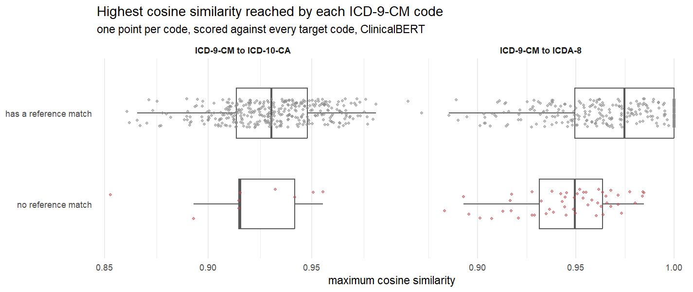
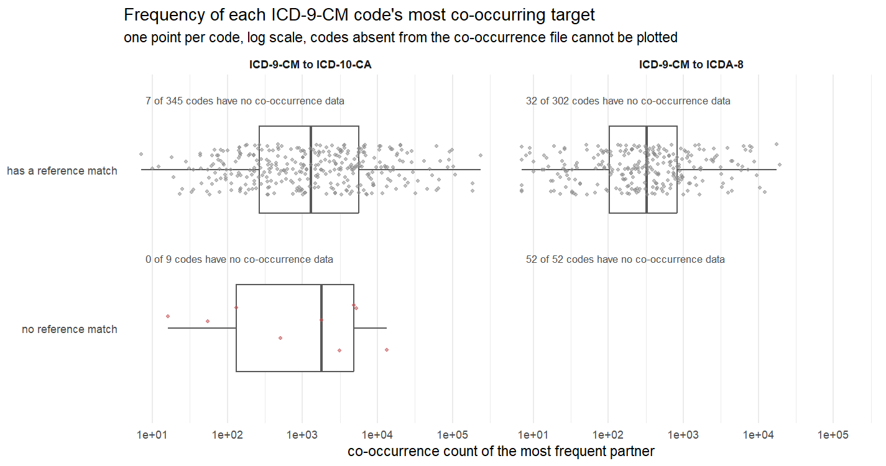

There are 9 ICD-9-CM codes with no ICD-10-CA match and 52 with no ICDA-8 match. The reference crosswalk lists them with no partner, so for these codes the correct output is no mapping at all, and any mapping the algorithm produces for them is a false positive.
The algorithm decides using two numbers. One is how often a pair of codes shows up on the same patient record. The other is the cosine similarity between the two code labels, which here comes from ClinicalBERT. Below are both numbers, first for the two groups together and then for each of these codes on its own, with the codes that do have a match alongside for comparison. The analysis is scripts/36_unmatched_descriptives.R and scripts/35_unmatched_codes.R on the main branch, written up in report.md Section 11.
The outcome that the rest of this describes. On ICD-9-CM to ICD-10-CA the algorithm produces a mapping for all 9 of the codes that should get none. Every one of them is a false positive and not one is correctly rejected. On ICD-9-CM to ICDA-8 it is the other way round. It stays silent on all 52, which is the right answer, but it also stays silent on 39 of the 302 codes that do have a valid match, so it is getting the special cases right and paying for it on the ordinary ones.
Co-occurrence first, this being the signal expected to be low. A code is only listed in the co-occurrence file if it shares a record with at least one target code, so a code that is not in the file has no data rather than a low count. Partners is how many different target codes a code turned up with, and the last five columns describe each group by the highest count any one of its codes reached. Pairs below a frequency of 6 were removed when the co-occurrence data was built, and the lowest count present is 7.
| Target system | Group | Codes | Not in the file | Median partners | Highest count, lowest | 25th | Median | 75th | Highest count, highest |
|---|---|---|---|---|---|---|---|---|---|
| ICD-10-CA | no match | 9 | 0 | 161 | 16 | 131 | 1,783 | 4,862 | 13,431 |
| ICD-10-CA | has a match | 345 | 7 | 209 | 7 | 264 | 1,288.5 | 5,633.5 | 238,548 |
| ICDA-8 | no match | 52 | 52 | no data | no data | no data | no data | no data | no data |
| ICDA-8 | has a match | 302 | 32 | 35.5 | 7 | 102.8 | 325.5 | 827 | 19,099 |
The ICD-10-CA group with no match is not low. Its middle code reaches a higher top count than the middle code of the group that does have a match. The ICDA-8 group with no match is not low either, it is simply not there at all.
Then cosine similarity. Each ICD-9-CM code is scored against every target code, 2038 of them for ICD-10-CA and 858 for ICDA-8, so the average column below is over all of those scores and all of the codes in the group. The last five columns describe the group by each code's single best score, which is the one that decides whether a mapping is made.
| Target system | Group | Codes | Average of every score | Best score, lowest | 25th | Median | 75th | Best score, highest |
|---|---|---|---|---|---|---|---|---|
| ICD-10-CA | no match | 9 | 0.807 | 0.853 | 0.915 | 0.915 | 0.942 | 0.955 |
| ICD-10-CA | has a match | 345 | 0.820 | 0.861 | 0.914 | 0.930 | 0.948 | 0.981 |
| ICDA-8 | no match | 52 | 0.830 | 0.883 | 0.931 | 0.949 | 0.964 | 0.985 |
| ICDA-8 | has a match | 302 | 0.828 | 0.865 | 0.950 | 0.975 | 1.000 | 1.000 |
On both crosswalks the group with no match sits inside the range of the group that has one. That is the finding in one line, and the per code tables below are where it comes from.
Co-occurrence.
| Code | Label | Partners | Min | 25th | Median | 75th | Max | Most frequent partner |
|---|---|---|---|---|---|---|---|---|
| 338 | pain not elsewhere classified | 827 | 7 | 18 | 49 | 181.5 | 13,431 | E11, Type 2 diabetes mellitus |
| 515 | postinflammatory pulmonary fibrosis | 306 | 7 | 13 | 24 | 53.8 | 5,194 | J84, Other interstitial pulmonary diseases |
| 239 | neoplasms of unspecified nature | 585 | 7 | 14 | 34 | 91 | 4,862 | I10, Essential (primary) hypertension |
| 327 | organic sleep disorders | 349 | 7 | 12 | 23 | 49 | 3,108 | G47, Other sleep disorders |
| 249 | secondary diabetes mellitus | 161 | 7 | 12 | 18 | 38 | 1,783 | E11, Type 2 diabetes mellitus |
| 209 | neuroendocrine tumors | 124 | 7 | 11.8 | 17 | 31.8 | 506 | C78, Secondary malignant neoplasm of respiratory and digestive organs |
| 175 | malignant neoplasm of male breast | 24 | 7 | 8 | 10.5 | 22.5 | 131 | C79, Secondary malignant neoplasm of other and unspecified sites |
| 339 | other headache syndromes | 58 | 7 | 9.2 | 15 | 17.8 | 54 | E11, Type 2 diabetes mellitus |
| 445 | atheroembolism | 2 | 7 | 9.2 | 11.5 | 13.8 | 16 | I74, Arterial embolism and thrombosis |
The counts are not low. Code 338, pain not elsewhere classified, turned up with 827 different ICD-10-CA codes, and with E11, type 2 diabetes mellitus, 13,431 times. Code 515 reaches 5,194 and code 239 reaches 4,862. Across the 345 ICD-9-CM codes that do have a match the middle value of the highest count is 1,288.5, and 5 of these 9 are above it.
Two behave as expected. Code 445, atheroembolism, has 2 partners and never gets past 16, and code 339, other headache syndromes, has 58 partners and a top count of 54.
The count seems to track how often a code gets written down, not whether it has a valid target. Pain, sleep disorders and unspecified neoplasms get recorded on all sorts of patients, so they sit next to whatever else the patient has.
Cosine similarity. Each row below is a summary of that code's 2038 scores.
| Code | Label | Average | Min | 25th | Median | 75th | Max | Closest target code |
|---|---|---|---|---|---|---|---|---|
| 175 | malignant neoplasm of male breast | 0.825 | 0.641 | 0.796 | 0.826 | 0.849 | 0.955 | C30, Malignant neoplasm of nasal cavity and middle ear |
| 249 | secondary diabetes mellitus | 0.817 | 0.663 | 0.774 | 0.817 | 0.859 | 0.951 | O24, Diabetes mellitus in pregnancy |
| 239 | neoplasms of unspecified nature | 0.831 | 0.662 | 0.804 | 0.833 | 0.859 | 0.942 | D15, Benign neoplasm of other and unspecified intrathoracic organs |
| 515 | postinflammatory pulmonary fibrosis | 0.852 | 0.694 | 0.823 | 0.858 | 0.886 | 0.932 | N72, Inflammatory disease of cervix uteri |
| 209 | neuroendocrine tumors | 0.836 | 0.693 | 0.808 | 0.842 | 0.867 | 0.915 | A74, Other diseases caused by chlamydiae |
| 327 | organic sleep disorders | 0.770 | 0.541 | 0.725 | 0.773 | 0.823 | 0.915 | P78, Other perinatal digestive system disorders |
| 339 | other headache syndromes | 0.816 | 0.648 | 0.786 | 0.820 | 0.851 | 0.915 | A69, Other spirochaetal infections |
| 338 | pain not elsewhere classified | 0.805 | 0.685 | 0.785 | 0.807 | 0.827 | 0.893 | R52, Pain, not elsewhere classified |
| 445 | atheroembolism | 0.711 | 0.552 | 0.686 | 0.713 | 0.736 | 0.853 | M66, Spontaneous rupture of synovium and tendon |
The best score for these 9 runs from 0.853 to 0.955. For the 345 codes that do have a match it runs from 0.861 to 0.981. The two ranges sit almost on top of each other, so a high score on its own does not tell us whether a code has a real match.
The closest code is also wrong in 8 of the 9, and not narrowly wrong. Code 175 is malignant neoplasm of male breast and its closest ICD-10-CA code is C30, malignant neoplasm of nasal cavity and middle ear, at 0.955. Code 515 is postinflammatory pulmonary fibrosis and its closest is N72, inflammatory disease of cervix uteri. The model is picking up shared words rather than shared meaning, and with both signals pointing the same way all 9 come out as mappings.
The one worth a second look is code 338. Its closest target is R52, and both are labelled pain not elsewhere classified, but the crosswalk still records no match for it. That one may be an error in the reference rather than in the algorithm.
These behave completely differently. None of the 52 appear in the co-occurrence data at all. Not a low count, no row, so there is nothing to tabulate for that signal.
This produces the right answer, since the algorithm returns no match for all 52, but it gets there for a reason that costs the crosswalk elsewhere. It will not accept a pair without co-occurrence data, and 32 of the 302 ICD-9-CM codes that do have a valid ICDA-8 match are missing from that file too, which is where the 39 lost mappings come from. The 52 are being got right by an accident of missing data rather than by either threshold doing its job.
Similarity looks much the same as it did on the other crosswalk. The best score for the 52 runs from 0.883 to 0.985, against 0.865 to 1.000 for the 302 that do have a match, so again there is no gap between the two groups. The four highest and the four lowest are below, and the full 52 are in the summary files.
| Code | Label | Average | Min | 25th | Median | 75th | Max | Closest target code |
|---|---|---|---|---|---|---|---|---|
| 164 | malignant neoplasm of thymus heart and mediastinum | 0.813 | 0.584 | 0.776 | 0.810 | 0.846 | 0.985 | 142, malignant neoplasm of salivary gland |
| 175 | malignant neoplasm of male breast | 0.816 | 0.578 | 0.782 | 0.816 | 0.848 | 0.984 | 174, malignant neoplasm of breast |
| 237 | neoplasm of uncertain behavior of endocrine glands and nervous system | 0.821 | 0.594 | 0.785 | 0.822 | 0.855 | 0.984 | 238, neoplasm of unspecified nature of eye brain and other parts of nervous system |
| 179 | malignant neoplasm of uterus part unspecified | 0.812 | 0.633 | 0.780 | 0.810 | 0.842 | 0.980 | 149, malignant neoplasm of pharynx unspecified |
| 588 | disorders resulting from impaired renal function | 0.820 | 0.700 | 0.801 | 0.822 | 0.840 | 0.901 | 515, pneumoconiosis due to silica and silicates |
| 312 | disturbance of conduct not elsewhere classified | 0.775 | 0.678 | 0.751 | 0.775 | 0.797 | 0.895 | 306, special symptoms not elsewhere classified |
| 625 | pain and other symptoms associated with female genital organs | 0.762 | 0.540 | 0.727 | 0.768 | 0.807 | 0.893 | 781, other symptoms referable to nervous system and special senses |
| 315 | specific delays in development | 0.777 | 0.671 | 0.752 | 0.776 | 0.800 | 0.883 | 066, late effects of viral encephalitis |
Each point is one ICD-9-CM code, placed at its highest cosine similarity against any target code. In both panels the upper row is the codes that do have a match and the lower row is the codes that do not, and the box covers the middle half of each group.

The same layout for co-occurrence, each code placed at its highest count against any target code, on a log scale. The lower row of the ICDA-8 panel is empty because none of those 52 codes are in the file.

Not on its own. On ICD-10-CA a similarity cut-off high enough to clear all 9 would have to sit above 0.955, and that also removes 286 of the 345 codes that are correct. On ICDA-8 the cut-off would be 0.985 and it removes 175 of 302. Co-occurrence is no better. A count cut-off high enough to clear the 9 would have to sit above 13,431, which removes 293 of the 338 matched codes that are in the file. The two together do not help either, because on ICD-10-CA the 9 pass both tests comfortably, and on ICDA-8 the 52 are already being caught by the missing data rather than by any threshold.
Step 1 of the Methods defines the similarity cutoff as the maximum similarity score for a code multiplied by the threshold value, which makes it relative to the code being mapped rather than a fixed standard. Table 2 of the same document then describes the thresholds as the minimum cosine similarity required for a match. Only the first of those is what the code does, and the difference matters for these cases.
Because the cutoff is a fraction of each code's own best score, the top target of every code clears it however low that score is. The weakest code on this crosswalk has a best score of 0.853, which puts its cutoff at 0.844 at a threshold of 0.990 and 0.853 at 1.0, so its best target passes at either end of the range in Table 2. There is no value a cosine similarity can fall below and be rejected.
Step 2 behaves the same way. It keeps each code's top N partners ranked by co-occurrence frequency, so the count is never compared against a value. The smallest highest count in the file is 7 and it is kept on the same terms as the code with 238,548. Pairs below a frequency of 6 were removed when the co-occurrence data was built, but that is a property of the data rather than a decision the algorithm makes.
So neither step rejects a pair for scoring too low. The only two things that make the algorithm stay quiet are the Step 3 chapter distance filter removing every candidate, or mapping algorithm 3, the one selected in the Methods, finding no co-occurrence data for the code. The second is what happens to all 52 on the ICDA-8 side, and between them they are why all 9 on the ICD-10-CA side come out as false positives.
This is worth settling before the abstain scenarios are tested. A scenario that rejects a pair for a low cosine similarity or a low co-occurrence count would be a change to Step 1 or Step 2 rather than a change to a parameter, and on the numbers above it would cost a large share of the correct mappings.